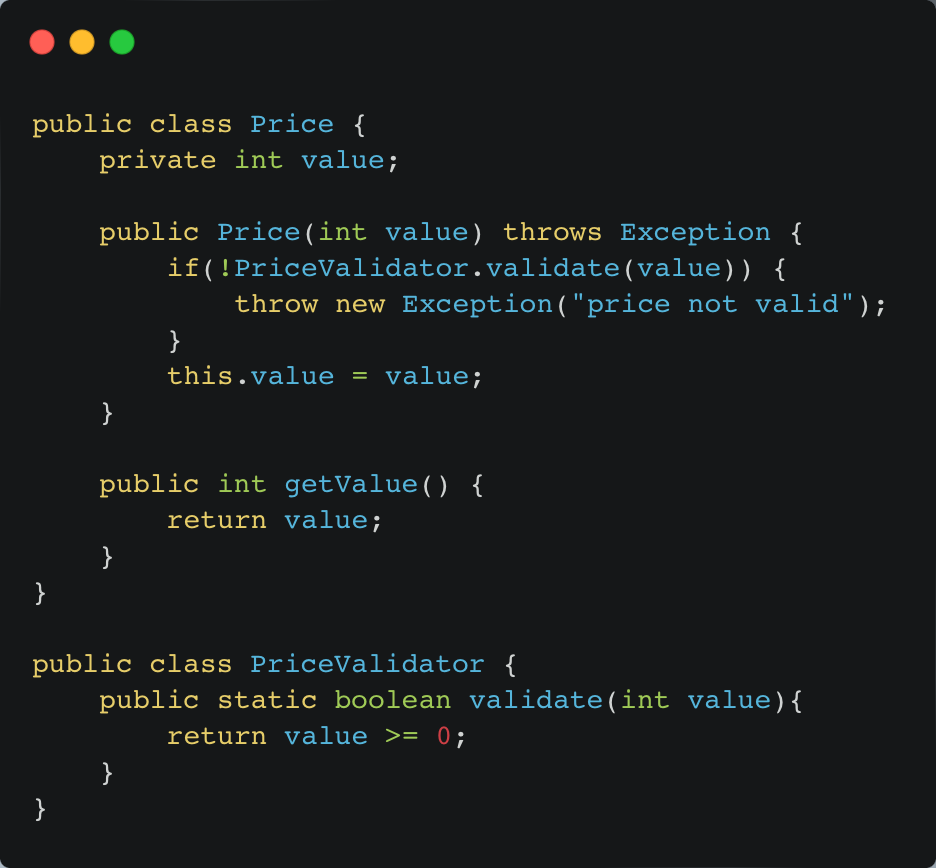
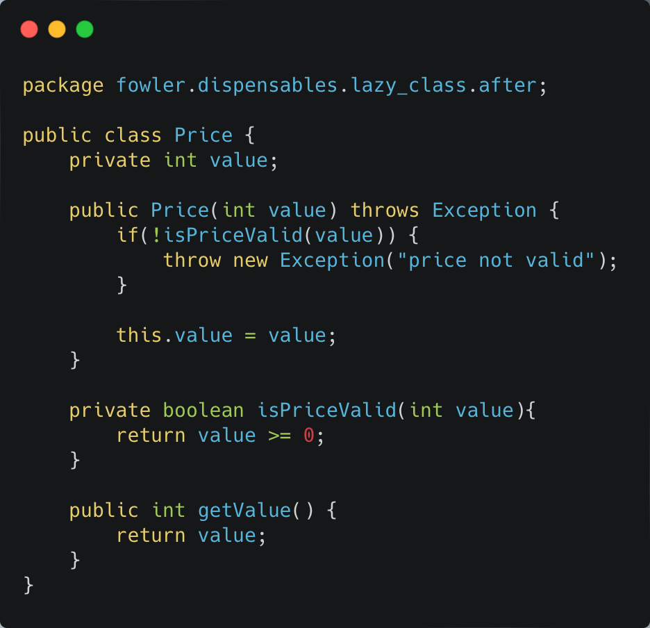

The Dispensable
Lazy Class
–– Penjelasan Smell
Kelas yang terlalu kecil memang tidak ideal. Semakin banyak kelas yang harus dibaca, semakin sulit bagi programmer untuk memahami keseluruhan kode produk. Hal ini dapat berakibat pada kesulitan dalam melakukan perubahan dan pemeliharaan kode di masa depan. Lazy class adalah kelas yang memiliki fungsi yang sangat minim, bahkan dalam kasus ekstrem hanya memiliki satu fungsi. Kondisi lazy class ini bisa terjadi karena beberapa hal, salah satunya adalah refactoring. Awalnya, kelas ini mungkin memiliki banyak fungsi. Namun, seiring dengan proses refactoring, satu per satu fungsinya dipindahkan ke kelas lain karena berbagai pertimbangan.
–– Penyelesaian
Pada contoh di PriceValidator.java. kelas hanya memiliki satu buah fungsi untuk validasi harga. Sehingga perlu dilakukan refactor kode dengan memindahkan Fungsi validate ke kelas Price.java kemudian diberi nama yang lebih sesuai untuk kelas Price, yaitu isPriceValid. Setelah dipindahkan, kelas PriceValidator bisa dihapus.
Kode setelah direfactor:
